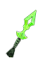
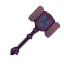
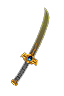
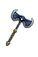
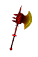

Filters:
Acid Shards

68 - 72 Damage
10% Pierce Ratio
Speed: Fast
60 Burn Damage over 3.0 Seconds
+15% Burn Damage
60 Poison Damage over 3.0 Seconds
+15% Instant Poison Damage
+15% Poison Damage
25 Instant Poison Damage
+20% Damage to Undead
Grants Skill : Meltdown
LVL 42, STR 211, DEX 280
Aimon-syd

180 - 202 Damage
15% Pierce Ratio
Speed: Fast
Set : Embodiment of Corruption
Chance for one of the following:
260 Burn Damage over 2.0 Seconds
260 Poison Damage over 2.0 Seconds
50 Piercing Damage
75 Fire Damage
75 Instant Poison Damage
350 Reduced Armor for 2.0 Seconds
45% Slowed for 2.0 Seconds
+30% Attack Speed
LVL 70, STR 260, DEX 510
Anathema

110 Damage
110 Vitality Damage
Speed: Average
360 Electrical Burn over 4.0 Seconds
+35% Vitality Damage
+35% Vitality Decay
10.0% Chance of +125% Life Leech
40% Energy Leech Resistance
+40 Intelligence
40% Absorption of Spell Energy
Grants Skill : Unholy Tempest (Activated on attack)
Blackened winds seep deep inside the bodies and souls of those who inhale them, damaging spiritual and earthly structures of their beings.
30.0 Second(s) Recharge
6.0 Second Duration
8.0 Meter Radius
160 Electrical Burn Damage per Second
160 Vitality Decay per Second
40% Reduced Resistances for 3.0 Seconds
+50% Damage to Ghosts
LVL 57, STR 274, DEX 370
Backstabber
24 - 27 Damage
10% Pierce Ratio
Speed: Fast
15 Bleeding Damage per Second
8% Reduction to Enemy's Health
+15% Attack Speed
+1 to Target Practice
+1 to all skills in Archery Mastery
LVL 15, STR 113, DEX 140
Darkfang

68 - 76 Damage
25% Pierce Ratio
Speed: Fast
Difficulty : Epic
+12% Dexterity
+12% Total Speed
Grants Skill: Sand Veil (Activated upon taking damage)
Fine earthly matter and dust quickly gather around you, forming a rotating sphere which pierces through enemy flesh, and makes it more probable for attacks to miss you.
24.0 Second(s) Recharge
24 Energy Cost
8.0 Second Duration
3.5 Meter Radius
80 Piercing Damage
3% Reduction to Enemy's Health
15% of Attack damage converted to Health
15% Chance to Dodge Attacks
15% Chance to Avoid Projectiles
LVL 43, STR 222, DEX 295
Darkfang
142 - 158 Damage
25% Pierce Ratio
Speed: Fast
Difficulty : Legendary
+15% Dexterity
+15% Total Speed
Grants Skill: Sand Veil (Activated upon taking damage)
Fine earthly matter and dust quickly gather around you, forming a rotating sphere which pierces through enemy flesh, and makes it more probable for attacks to miss you.
24.0 Second(s) Recharge
40 Energy Cost
8.0 Second Duration
3.5 Meter Radius
120 Piercing Damage
4% Reduction to Enemy's Health
15% of Attack damage converted to Health
25% Chance to Dodge Attacks
25% Chance to Avoid Projectiles
LVL 54, STR 264, DEX 355
Drowned Sailor

137 - 146 Damage
15% Pierce Ratio
Speed: Fast
+10% Total Damage
270 - 300 Vitality Decay over 3.0 Seconds
150 - 180 Life Leech over 3.0 Seconds
123 Cold Damage
10.0% Chance of 28 Reduced Resistances for 3.0 Seconds
60% Bleeding Resistance
60% Cold Resistance
+42 Intelligence
+10% Energy
+1 to all skills in Aqua Mastery
+1 to all skills in Necromancy Mastery
LVL 56, STR 288, DEX 390
Embrace of the Final Rest
12 - 18 Damage
15% Pierce Ratio
Speed: Fast
15.0% Chance of 45 Life Leech over 3.0 Seconds
12 Piercing Damage
20% Cold Resistance
20% Vitality Damage Resistance
+25 Defensive Ability
LVL 10, STR 89, DEX 105
Golden Javelin
45 - 55 Damage
25% Pierce Ratio
Speed: Fast
+20% Physical Damage
30 Frostburn Damage over 2.0 Seconds
30 Energy Leech Damage over 2.0 Seconds
20 Instant Poison Damage
+2 to Treacherous Javelin
+2 to Stab Wound
LVL 28, STR 186, DEX 186
Ill Fate
167 - 178 Damage
10% Pierce Ratio
Speed: Fast
210 Poison Damage over 3.0 Seconds
+28% Vitality Damage
110 Instant Poison Damage
10% of Attack damage converted to Health
+3 to Rot Zone
+3 to Bouncing Plague
Grants Skill : Bouncing Plague (Activated on attack)
Unleash bouncing decay to instantly poison all nearby enemies.
2.0 Second(s) Recharge
Affects up to 5 targets
80 Instant Poison Damage
80 Vitality Damage
35% of Attack damage converted to Health
LVL 50, STR 274, DEX 370
Librarian's Silencer

150 - 160 Damage
15% Pierce Ratio
Speed: Fast
10.0% Chance of 10.0 second(s) of Skill Disruption
120% Lightning Resistance
80% Energy Leech Resistance
80% Skill Disruption Resistance
+3.0 Energy Regeneration per second
-10% Energy Cost
Grants Skill : Knowledge is Power
LVL 56, STR 281, DEX 380
Necrochakram
50 - 56 Damage
15% Pierce Ratio
Speed: Fast
+20% Cold Damage
40 Energy Leech over 3.0 Seconds
20 Cold Damage
10.0% Chance of 60% Reduction to Enemy's Health
+300 Energy
+10% Attack Speed
+20 Damage to Undead
LVL 27, STR 145, DEX 185
Pabilsag Stings
40 - 44 Damage
25% Pierce Ratio
Speed: Fast
+15% Pierce Damage
20.0% Chance of 180 Poison Damage over 3.0 Seconds
+15% Instant Poison Damage
+15% Poison Damage
+2 to Stab Wound
+2 to Poison Weapons
Bonus to All Pets:
45 Poison Damage over 3.0 Seconds
+15% Poison Damage
LVL 24, STR 141, DEX 180
Pale Immolation of Muspelheim
167 - 178 Damage
10% Pierce Ratio
Speed: Fast
180 - 252 Burn Damage over 3.0 Seconds
+40% Fire Damage
+40% Burn Damage
84 - 168 Fire Damage
100% Fire Resistance
+20% Attack Speed
+40% Casting Speed
50% Weapon Base Damage becomes Elemental
-15% Energy Cost
Grants Skill : Fire Nova
LVL 62, STR 274, DEX 370
Stealer of Ka

25 - 29 Damage
15% Pierce Ratio
Speed: Fast
30 Energy Leech over 3.0 Seconds
40% of Attack damage converted to Health
-25% Life Leech Resistance
+1 to all skills in Necromancy Mastery
LVL 15, STR 120, DEX 150
Tranquiliser
30 - 60 Damage
100% Pierce Ratio
Speed: Fast
165 - 294 Bleeding Damage over 3.0 Seconds
270 - 330 Poison Damage over 3.0 Seconds
35 Instant Poison Damage
10% Energy Drain
30 Reduced Resistances for 3.0 Seconds
30.0% Chance of 3.0 - 5.0 second(s) of Sleep
100% Increase in Projectile Speed
LVL 45, STR 222, DEX 295
Tourmaline Axe

159 - 168 Damage
15% Pierce Ratio
Speed: Fast
+20% Physical Damage
150 Bleeding Damage over 3.0 Seconds
+30% Bleeding Damage
150 Burn Damage over 3.0 Seconds
+40% Burn Damage
+10% Dexterity
+15% Attack Speed
10% Chance to Avoid Projectiles
+2 to Battle Momentum
+2 to Barrage
LVL 51, STR 274, DEX 370